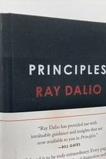

Library › Business & Startups
Principles — Summary & Key Lessons

Life and work principles from the founder of the world's largest hedge fund — built from decades of documented mistakes.
📖 OPEN THE FULL INTERACTIVE BREAKDOWN →🌐 Read it in Hindi, Hinglish, Gujarati, Tamil & 22 more languages — free, with audio.
💡 The Big Idea
Ray Dalio built Bridgewater into the world's largest hedge fund — and credits none of it to brilliance. In 1982 he publicly, confidently predicted a depression that never came, lost everything, and had to borrow $4,000 from his dad. That humiliation became his operating system: since he could be THAT wrong while THAT sure, the goal must shift from 'being right' to 'finding out what's true.' His machinery: treat life as a series of encounters with reality; when reality hurts, apply Pain + Reflection = Progress; convert every reflection into a written PRINCIPLE — a reusable recipe for that situation type — so no mistake needs to be made twice; build an 'idea meritocracy' where radical truthfulness and radical transparency let the best ideas win regardless of rank, with disagreements resolved by 'believability-weighting' (the opinions of people with proven track records in THAT domain count more). The 5-Step Process loops it all: set goals → identify problems → diagnose roots → design solutions → push through — and your weaknesses at any step are just facts to design around, not shames to hide.
🧠 The 6 Key Lessons
Lesson 1: Hyperrealism: Truth Is the Essential Foundation
Life Principles 1: Embrace Reality and Deal with It
Dalio's first principle sounds obvious and is practiced by almost no one: understand reality as it IS, not as you wish it were, and work with it. Most people negotiate with facts — softening feedback they give, avoiding feedback they'd receive, choosing comfortable explanations, treating problems as intrusions rather than information. Hyperrealists treat every encounter with reality — especially painful ones — as data about how the machine works. The formula 'Dream + Reality + Determination = A Successful Life' puts reality irreplaceably in the middle: dreams without realism are lottery tickets; realism without dreams is pessimism with a spreadsheet. The practical hinge: pain is nature's signal that a lesson is available. Most people flee the signal and repeat the class; hyperrealists sit in it — Pain + Reflection = Progress — and graduate.
📖 Example: Dalio's 1982 catastrophe, told against himself in detail: after nailing the Mexican debt default call, he testified to Congress and went on TV confidently predicting a depression. Instead, the greatest bull market in history began. Bridgewater lost so much… Read the full example →
⚡ Do this: Take your most recent painful failure and run the formula on paper: What happened? What does this teach about how reality works? What PRINCIPLE (a written if-this-then-that rule) will you follow next time this situation type appears?
Lesson 2: The 5-Step Process: Your Personal Evolution Machine
Life Principles 2: Use the 5-Step Process
Everything you want operates through the same loop. (1) GOALS: pick them clearly — you can have anything but not everything; prioritization IS strategy. (2) PROBLEMS: identify what stands between you and the goal, and don't tolerate them — treat each as a machine part malfunctioning, not a moral failing. (3) DIAGNOSIS: find ROOT causes, which are usually about what people (including you) are LIKE, not what they did — 'I missed the deadline' is a symptom; 'I chronically underestimate tasks because I don't track my actual times' is a root. (4) DESIGN: build the plan that attacks the root — this is the step everyone skips, jumping from problem straight to action. (5) PUSH THROUGH: execute with discipline. The liberating catch: nobody is good at all five steps — visionaries flounder at diagnosis, grinders at goal-setting. You don't need to become complete; you need to KNOW your weak step and get help there — from people, tools, or systems. Humility about your gaps beats talent in your strengths.
📖 Example: Dalio's own diagnosis of himself: he's strong at steps 1-4 and mediocre at 5 (detailed execution) — so he systematically partnered with executors and built Bridgewater's famous tools (issue logs, baseball cards rating everyone's proven strengths) so the… Read the full example →
⚡ Do this: Rate yourself 1-10 on each step: goal-clarity, problem-spotting, root-diagnosis, solution-design, execution. For your lowest score, name one person or system that's strong there and enlist it this month — don't fix the weakness, DESIGN AROUND it.
Lesson 3: Radical Open-Mindedness: Your Two Barriers
Life Principles 3: Be Radically Open-Minded
Two barriers stand between everyone and good decisions. The EGO barrier: your deep-brain need to be right, look good, and defend your views operates faster than your reasoning — so criticism triggers fight mode before logic loads. The BLIND-SPOT barrier: your particular mind literally cannot see certain things (the creative can't see details, the detail-mind can't see pictures), the way colorblindness can't be fixed by squinting harder. You cannot remove either barrier — but you can route around both with one practice: THOUGHTFUL DISAGREEMENT. Actively seek the most believable people who disagree with you — not to fight, but to see through their eyes what your machine can't render. The mindset shift: change your goal from 'being right' to 'finding out what's true,' and treat someone showing you a mistake as a gift, not an attack. The nakedly practical version: 'The two biggest barriers to good decision-making are your ego and your blind spots.' Everything else in the book is machinery for beating those two.
📖 Example: Bridgewater's radical transparency in action: nearly every meeting is recorded and available to all employees; anyone — a first-year analyst — can and must challenge Dalio's reasoning, and criticism behind someone's back is a fireable offense ('never say… Read the full example →
⚡ Do this: Identify the most believable person you know who disagrees with a major decision you're about to make. Book 30 minutes NOT to convince them — your only job is to pass their argument back to them so accurately they say 'exactly.' Then decide.
Lesson 4: The Idea Meritocracy: Believability-Weighted Decisions
Work Principles: Get the Culture Right
Most organizations run on one of two broken systems: autocracy (the boss decides — bottlenecked by one person's blind spots) or democracy (everyone's vote equal — the intern's market view counts like the veteran's). Dalio's third way: an IDEA MERITOCRACY where decisions weight opinions by BELIEVABILITY — demonstrated, repeated success in the specific domain in question, plus the ability to explain the reasoning behind the view. Your believability on markets can be 9 while on hiring it's 3; the weighting shifts per question. To make it work, two prerequisites: radical truthfulness (problems and disagreements on the table, not in corridors) and radical transparency (people can see reality for themselves — recorded meetings, open metrics — so trust is verified, not requested). The payoff compounds: meritocracies surface errors while they're cheap, retain independent thinkers who'd suffocate in politics, and make the organization smarter than its smartest person.
📖 Example: The book's decisive case: in 2012, Dalio believed European bond markets were heading one way; a younger employee with a stronger recent track record on European rates disagreed. Under autocracy, founder wins; under democracy, who knows. Under… Read the full example →
⚡ Do this: For your next team decision, replace 'what does everyone think?' with two questions: 'Who here has repeatedly succeeded at THIS specific type of problem?' and 'Can they explain their reasoning?' Weight accordingly — including weighting yourself down where your track record is thin.
Lesson 5: Embrace Reality and Deal With It: The Pain + Reflection = Progress Loop
Part 1: The Life Principles
Dalio's most personal principle: nature rewards those who confront painful reality — and the pain is actually a signal pointing at growth. His formula: pain + reflection = progress. When something hurts (a loss, a failure, a mistake), the pain means reality is showing you a mismatch between your expectations and how things work. If you reflect on it honestly, you learn the lesson and evolve; if you avoid it, the same pain returns at a higher price. The people who succeed, Dalio says, are the ones who operate like evolution itself: learn from what didn't work, adapt, and repeat. The discomfort is the tuition; skipping it means repeating the course.
📖 Example: Dalio describes his own 1982 bet on a debt crisis that was completely wrong — he lost everything and had to borrow money from his dad. But he wrote down the reasons he was wrong, built them into his process, and that single painful reflection became the… Read the full example →
⚡ Do this: Take your most recent painful failure and write a one-paragraph reflection: what did reality teach you? Convert it into one rule for next time.
Lesson 6: Do What You're Naturally Good At: The Power of Knowing Your Wiring
Part 1: The Life Principles
Dalio's hard-earned insight: you can't be great at everything, and trying to be is a waste of your one life. People are wired differently — some think conceptually, some practically, some visually — and the happiest, most successful people are those who found what they're naturally good at and built their life around it. This means being honest about your weaknesses too: Dalio hired partners for the things he was bad at, and the humility to say 'I'm not good at this' was a strength, not an admission of defeat. The practical move: take an honest inventory of your natural abilities and your liabilities, and design your role (and your team) around the first while covering the second.
📖 Example: Dalio describes how he realized early that he had no natural memory for facts and details — so instead of fighting it, he designed his life and company around his conceptual strengths and hired 'rememberers' to cover the gap. The acknowledgment, not the… Read the full example →
⚡ Do this: Write your top 3 natural strengths and top 3 weaknesses. This month, shift one hour of weekly work away from a weakness toward a strength — and delegate or share the weakness.
✅ 5-Step Action Plan
- Start a principles journal: every painful mistake becomes a written if-then rule within 24 hours.
- Rate yourself on the 5 Steps; design around your weakest step with a person or system this month.
- Book one thoughtful-disagreement session before every major decision — steelman the opposition out loud.
- Institute believability-weighting: track who's actually been right about what, yourself included.
- Run weekly 'Pain + Reflection' reviews: what hurt this week, and what does it teach about how reality works?
⚠️ When This Doesn't Work
Dalio's radical transparency and systematised decisions are the gold standard — and Knight Capital is the reminder that systems fail systematically: a beautifully engineered algorithmic system, deployed after rigorous testing, destroyed $440 million in 45 minutes because of one undetected software flaw. Dalio's principles assume the system is correct; they underweight that the system itself can be the error. Radical transparency must extend to the machines: question the code as fiercely as you question the people.
💀 The Graveyard Proves It
🤖 Knight Capital — The Algorithm That Lost $440M in 45 Minutes. Burn: $440M before lunch. Read the full case study →
💬 Best Quotes from Principles
- “Pain plus reflection equals progress.”
- “He who lives by the crystal ball will eat shattered glass.”
- “If you're not failing, you're not pushing your limits, and if you're not pushing your limits, you're not maximizing your potential.”
Interactive version: mark lessons as read, listen in your language, share quote cards.